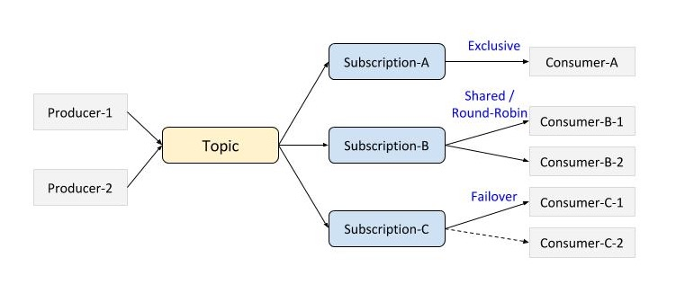

システム概要
Pulsarはマルチテナントで、ハイパフォーマンスなサーバ間メッセージングのソリューションです。
主な特徴は:
- シンプルなAPIによるJavaバインディング
- 複数のサブスクリプションモード: pub/sub、ロードバランサ、フェイルオーバー
- シームレスなメッセージのジオレプリケーション
- 発行、end-to-endでの低レイテンシ
- 永続メッセージングによるメッセージ配信保証; 永続ストレージは複数ホスト間での複数コピーが設定可能な構成
アーキテクチャ
上位レベルでは、Pulsarインスタンスは単一または複数クラスタで構成され、それぞれのクラスタは異なる地理的地域に存在する可能性があります。
1つのPulsarクラスタはメッセージBroker, BookKeeperおよび (コンポーネント間の) 連携と構成管理のためのZooKeeperアンサンブルで構成されています。
そしてクライアントライブラリが使い勝手の良いAPIを提供します。

メッセージBroker
PulsarのBrokerはステートレスなコンポーネントで、主に2つの異なるコンポーネントを実行します:
トピックのルックアップと管理操作のためのRESTインターフェースを提供するHTTPサーバと、全てのデータ転送を独自バイナリプロトコル上で行う非同期TCPサーバであるディスパッチャです。
バックログがキャッシュサイズを超えない限り、メッセージは通常Managed Ledgerのキャッシュから送信され、超えた場合にはBrokerがBookKeeperからエントリの読み出しを始めます。
グローバルトピックでのジオレプリケーションをサポートするためにBrokerはレプリケータを管理します。
このレプリケータはPulsarクライアントライブラリを利用し、ローカルクラスタ内で発行されるエントリをtailしリモートクラスタに再発行します。
永続ストア
Pulsarは、Apache BookKeeperを分散ログ先行書き込みシステムの永続ストレージとして使用しています。
BookKeeperでは、アプリケーションはLedgerと呼ばれる多くの独立したログを作成できます。
Ledgerは、単一のwriterが末尾への追加のみを行うデータ構造で、複数のストレージノード (またはBookieと呼びます) に割り当てられ、エントリはこれらのノードの複数にレプリケートされます。
Ledgerのセマンティクスはとてもシンプルです:プロセスはLedgerの作成、エントリの末尾への追加、Ledgerのクローズができます。明示的またはwriterのプロセスがクラッシュしてLedgerがクローズされた後、read-onlyモードのみでオープンできます。
そしてLedger内のエントリが不要になったら、システムからそのLedger自体を削除できます。
BookKeeperの主な強みは、障害発生時のLedgerの読み取りの一貫性を保証することです。
Ledgerは単一のプロセスによってのみ書き込み可能なので、プロセスは非常に効率よく自由にエントリを追加することができ (追加のコンセンサスが不要) 、障害後には、Ledgerは状態を確定しログに最後にコミットされたエントリを確定するリカバリープロセスを実行します。
その後、Ledgerの全てのreaderは全く同じ内容を参照することが保証されます。
BookKeeperはエントリのレプリケーション、ノード障害を処理するのに非常に効率的なシーケンシャルストアであり、加えて容量とスループットが水平にスケーラブルなため、Pulsarで採用しています。
運用上の観点からも、PulsarクラスタにBookieを追加するだけで容量を即座に増やすことができます。
BookKeeperの他の強みは、Bookieは並行読み込み/書き込みで何千ものLedgerを処理するようにデザインされている点と、複数ディスクデバイス (1つはJournal用、もう１つは通常のストレージ用) を利用することで、進行中の書き込み処理のレイテンシから読み込み処理の影響を分離できる点です。
Managed Ledger
BookKeeperのLedgerが単一のログ抽象化を提供するため、単一トピックのストレージ層を表すManaged Ledgerと呼ばれるLedgerの上位概念を表すライブラリが開発されました。
Managed Ledgerは、ストリームの最後に追加し続ける単一のwriterとストリームをconsumeしている複数カーソル (それぞれが独自の関連位置を保持します) を持つメッセージストリームの抽象化を表します。
内部的には、1つのManaged Ledgerはデータを保持するために複数のBookKeeperのLedgerを使います。
複数のLedgerを持つのには2つの理由があります:
1つ目は、障害後にLedgerはもはや書き込めないため新しいLedgerを作成する必要があるためで、
2つ目は、すべてのカーソルがLedgerに含まれるすべてのメッセージをconsumeした時にLedgerを削除する可能性があるため定期的にLedgerをロールオーバーしたいためです。
メタデータストア
Pulsarはメタデータやクラスタの構成、 (コンポーネント間の) 連携のためにApache ZooKeeperを利用します。
- Global ZooKeeper は、グローバルで整合性が必要なプロパティやネームスペース、ポリシーのようなユーザプロビジョニングデータを保持します。
- それぞれのクラスタには、ownershipのメタデータやBrokerの負荷レポート、BookKeeperのLedgerのメタデータのようなクラスタ特有の構成、連携のためのデータを保持しているLocal ZooKeeperアンサンブルがあります。
デザイン
トピック
トピック はメッセージを発行、購読するするための論理的なエンドポイントです。 Producerはトピックに対してメッセージを発行し、Consumerはトピックに対して購読します。 Pulsarではトピックに対する複数のサブスクリプションモードでpub/sub、ロードバランサー、フェイルオーバーのユースケースをサポートします。
通常のトピック (パーティションドトピックを除く) は明示的に作成される必要はなく、 トピックに対してメッセージをproduce/consumeしようとした際に作成されます。
サブスクリプション
サブスクリプションはConsumerが最初に接続した時に与えられたサブスクリプション名によって作成される永続性のあるリソースです。 サブスクリプションは作成された後、トピックに対して発行された全てのメッセージを受け取ります。 Consumerがこのサブスクリプションに1つも接続していない場合、発行された全てのメッセージはバックログに保持されます。 最終的に、トピックからサブスクリプションを削除するために、Consumerは購読解除できます。
サブスクリプションモード
サブスクリプションモードはメッセージをConsumerにどのようにメッセージを配送するかを決定する設定です。

Exclusive
- デフォルトのサブスクリプションモードです。1つのサブスクリプションに対して1つのConsumerのみが接続を許可されます。2つ以上のConsumerが同じサブスクリプション名を用いてトピックに対して購読を試みた場合、エラーが発生します。トピックに対するpublish/subscribeモデルをサポートするために、複数のConsumerは異なるサブスクリプション名を利用します。トピックに発行されたメッセージは全てのConsumerに配送されます。
Shared
- 複数のConsumerが同じサブスクリプションに接続できます。メッセージはラウンドロビンで複数のConsumerに配送され、各メッセージは1つのConsumerのみに配送されます。Consumerが切断するとき、送信されたがAck (確認応答) が返ってきていない全てのメッセージは、再送のためにリスケジュールされます。
- SharedのConsumerに対する配送の順序は保証されません。
Failover
- 複数のConsumerが同じサブスクリプションに接続できます。ConsumerはConsumer名により辞書順にソートされ、辞書順で最初のConsumerがMaster Consumerとしてメッセージを受信します。このConsumerが切断された場合、Ackが返ってきていないものとその後に続く全てのメッセージは辞書順で次のConsumerに配送されます。
プロパティとネームスペース
プロパティとネームスペースはマルチテナントをサポートするためのPulsarのキーコンセプトです。
- プロパティ はテナントを特定します。Pulsarは適切な容量を割り当てられた特定のプロパティに対して提供されます。
- ネームスペース はプロパティ内での管理単位の名前です。ネームスペースに設定されたポリシーは、そのネームスペース内の全てのトピックに適用されます。プロパティはREST APIやCLIツールを用いてセルフ管理により複数のネームスペースを作成できます。例えば、異なるアプリケーションを持つプロパティは、各アプリケーションのために別々のネームスペースを作成できます。
例えば、プロパティmy-propertyのための、クラスタus-wに存在している、アプリケーションmy-app1が使用するネームスペース、my-property/us-w/my-app1ついて考えてみます。
そのようなネームスペースに対するトピックネームは以下のようになります:
persistent://my-property/us-w/my-app1/my-topic-1
persistent://my-property/us-w/my-app1/my-topic-2
...
Producer
Producerはトピックに接続し、メッセージを送信します。
同期送信 vs. 非同期送信 - メッセージは同期的あるいは非同期的にBrokerに送信できます:
- 同期: Producerはメッセージを送信した後Brokerからの確認応答を待ちます。
- 非同期: Producerはメッセージをブロッキングキューに入れ、制御を戻します。クライアントライブラリはバックグラウンドでBrokerに送信します。キューが最大量 (設定可能) に達した場合、Producerは送信APIを呼び出した時、Producerの引数に応じてブロックされる、あるいは失敗する可能性があります。
圧縮 - 帯域を節約するため、メッセージを圧縮することが可能です。圧縮と解凍はどちらもクライアントで動作します。以下の圧縮形式をサポートしています:
- LZ4
- ZLIB
バッチ - バッチ処理が可能な場合、Producerはメッセージを蓄積し、1つのリクエストでメッセージのバッチを送信しようとします。バッチサイズはメッセージの最大数と最大発行レイテンシで定義されます。
Consumer
Consumerはサブスクリプションに接続し、メッセージを受け取ります。
同期受信 vs. 非同期受信 - 同期受信はメッセージが利用可能になるまでブロックされます。同期受信ではCompletableFutureインスタンスとしてすぐに返却されます。CompletableFutureインスタンスは新しいメッセージが利用可能になった時、受信して完了します。
確認応答 - メッセージは1つ1つ個別に、あるいは累積的に確認応答が返されます。累積的な確認応答をするConsumerは、最後に受け取ったメッセージの確認応答を返します。その場合、確認応答を返したメッセージまでのストリーム内の全てのメッセージはそのConsumerに再送されません。サブスクリプションモードがSharedの場合は、累積的な確認応答は使用できません。
リスナー - カスタマイズされたMessageListenerの実装をConsumerに渡すことができます。クライアントライブラリは新しいメッセージを受け取るとリスナーを呼び出します (Consumer Receiveを呼び出す必要はありません) 。
パーティションドトピック
通常のトピックは最大スループットを制限する1つのBrokerのみから提供されます。パーティションドトピックは高いスループットを達成するために複数のBrokerにまたがる特殊なトピックです。パーティションドトピックは管理API/CLIを通じて明示的に作成される必要があります。トピックを作成する際、パーティションの数を記述できます。
パーティションドトピックは実際にはN (パーティションの数) 個の内部トピックとして実装されます。内部トピックと普通のトピックについて、サブスクリプションモードの挙動に違いはありません。

ルーティングモード - ルーティングモードはどのパーティション (内部トピック) にメッセージが発行されるかを決定します:
- キーハッシュ: メッセージにキーが指定されていれば、Partitioned Producerはキーをハッシュ化し、キーバケットごとの順序を保証しながら、特定のパーティションに割り当てます。
- Single Partition: キーが指定されない場合、各プロデューサのメッセージはプロデューサごとのメッセージの順序を保証するために、 (最初にランダムに選ばれた) 専用パーティションにルーティングされます。
- Round Robin Partition: キーが指定されない場合、最大スループットを達成するために、全てのメッセージはラウンドロビンで異なるパーティションにルーティングされます。順序は保証されません。
- Custom Partition: メッセージは独自のMessageRouterの実装によってルーティングされます。
public interface MessageRouter extends Serializable {
/**
* @param msg メッセージオブジェクト
* @return そのメッセージのために使用するパーティションのインデックス
*/
int choosePartition(Message msg);
}
永続化
保証されたメッセージの配送はそれらが配信され、Consumerによる確認応答を受け取るまで頑健な方法で保存される必要があります。このメッセージングの方法は一般的にPersistent Messagingと呼ばれます。
メッセージの永続性はトピックレベルで設定されます。トピックは“persistent”にも“non-persistent”にもなりえます。トピック名は以下のようになります: persistent://my-property/global/my-ns/my-topic
persistent
- 全てのメッセージはディスク上に保存、同期され、N個のコピー (例: 4個のコピーが個別にミラーリングされたRAIDボリュームを持つ2台のサーバに存在) が全てのConsumerがメッセージをconsumeするまで保存されます。カーソルと呼ばれるCosumerの購読位置もディスク上に保存されます。メッセージは必ず1回は配送されることが保証されます。
non-persistent
- 現在、PulsarはNon-persistent Messagingとして知られるベストエフォートの配送はサポートしていません。しかし、今後の計画としてNon-persistent Messagingをサポートする予定があります。
レプリケーション
Pulsarでは異なるジオロケーションでのメッセージのproduce, consumeが可能です。例えば、アプリケーションが1つのジオ/マーケットにデータを発行し、異なるジオ/マーケットでそれをconsumeし処理したいとします。Global Replicationがそれを可能にします。
認証と認可
TODO
クライアントライブラリ
PulsarはJava言語バインディングのクライアントAPIを公開しています。 クライアントAPIはクライアント-Broker間の通信プロトコルを最適化・カプセル化し、アプリケーションから使用するためのシンプルで直感的なAPIを公開しています。 その内部では、クライアントライブラリが透過的なBrokerとの再接続や接続フェイルオーバー、BrokerからAckが返されるまでのメッセージのキューイング、バックオフによる接続再試行のようなヒューリスティクスなどをサポートしています。
クライアントのセットアップフェイズ
アプリケーションがProducer/Consumerを作成する際、Pulsarのクライアントライブラリは2つのステップから成るセットアップフェイズを内部的に開始します。 最初のタスクは、ルックアップのためのHTTPリクエストを送信してトピックのオーナーであるBrokerを見つける事です。 このリクエストはアクティブなBrokerの中の1台に届き、 (キャッシュされた) ZooKeeperのメタデータを参照する事でどのBrokerがトピックを提供しているかを知る事ができます。 どのBrokerもリクエストされたトピックを提供していない場合には、最も負荷の小さいBrokerにそのトピックが割り当てられます。
クライアントライブラリがBrokerのアドレスを取得すると、TCPコネクションを作成 (またはプールされた既存のコネクションを再利用) し、認証を行います。 このコネクションの中で、クライアントとBrokerは独自プロトコルのバイナリコマンドを交換します。 この時点で、クライアントはProducer/Consumerを作成するためのコマンドをBrokerに送信します。 なお、このコマンドは認可ポリシーを検証した後、それに従って行われます。
TCPコネクションが切断されると、即座にクライアントはこのセットアップフェイズを再実行し、成功するまで指数バックオフを試行し続けます。
PulsarClient
PulsarClient (TODO: javadocs) インスタンスは、メッセージのproduce/consumeを行う前に必要となります。
ClientConfiguration config = new ClientConfiguration();
PulsarClient pulsarClient = PulsarClient.create("http://broker.example.com:8080", config);
...
pulsarClient.close();
PulsarClientに引数を渡すためにClientConfiguration (TODO: javadocs) を使用できます:
// Pulsarクライアントのインスタンスの中で使用する認証プロバイダをセット
public void setAuthentication(Authentication authentication);
public void setAuthentication(String authPluginClassName, String authParamsString);
public void setAuthentication(String authPluginClassName, Map<String, String> authParams);
// オペレーションのタイムアウト値をセット (デフォルト：30秒)
public void setOperationTimeout(int operationTimeout, TimeUnit unit);
// Brokerとのコネクションをハンドリングするスレッド数をセット (デフォルト：1スレッド)
public void setIoThreads(int numIoThreads);
// メッセージリスナとして使用するスレッド数をセット (デフォルト：1スレッド)
public void setListenerThreads(int numListenerThreads);
// 1台のBrokerとの間にオープンするコネクション数の最大値をセット
public void setConnectionsPerBroker(int connectionsPerBroker);
// Nagleアルゴリズムを無効化するためにTCP no-delayフラグを使用するかどうかを設定
public void setUseTcpNoDelay(boolean useTcpNoDelay);
Consumer API
PulsarClientを使用してConsumer (TODO javadocs) を作成し、10のメッセージを受信します。
ConsumerConfiguration conf = new ConsumerConfiguration();
conf.setSubscriptionType(SubscriptionType.Exclusive);
Consumer consumer = pulsarClient.subscribe(
"persistent://my-property/us-w/my-ns/my-topic", "my-subscriber-name", conf);
for (int i = 0; i < 10; i++) {
// メッセージを受信
Msg msg = consumer.receive();
// 何らかの処理を実行
System.out.println("Received: " + new String(msg.getData()));
// メッセージの処理に成功した事を通知するAck
consumer.acknowledge(msg);
}
consumer.close();
Consumerに引数を渡すためにConsumerConfiguration (TODO javadocs) を使用できます:
// Ackが返されていないメッセージのタイムアウト値をセット (最も近いミリ秒の値になるように切り捨て)
public ConsumerConfiguration setAckTimeout(long ackTimeout, TimeUnit timeUnit);
// トピックの購読時に使用するサブスクリプションタイプを選択
public ConsumerConfiguration setSubscriptionType(SubscriptionType subscriptionType);
// ConsumerのMessageListenerをセット
public ConsumerConfiguration setMessageListener(MessageListener messageListener);
// Consumerの受信キューのサイズをセット
public ConsumerConfiguration setReceiverQueueSize(int receiverQueueSize);
Producer API
PulsarClientを使用してProducer (TODO javadocs) を作成し、10のメッセージを発行します。
ProducerConfiguration = config = new ProducerConfiguration();
Producer producer = pulsarClient.createProducer(
"persistent://my-property/us-w/my-ns/my-topic", config);
// 10のメッセージをトピックに発行
for (int i = 0; i < 10; i++) {
producer.send("my-message".getBytes());
}
producer.close();
Producerに引数を渡すためにProducerConfiguration (TODO javadocs) を使用できます:
// 送信タイムアウト値をセット (デフォルト：30秒)
public ProducerConfiguration setSendTimeout(int sendTimeout, TimeUnit unit);
// BrokerからAckを受信するためにペンディング状態になっているメッセージを保持するキューの最大サイズをセット
public ProducerConfiguration setMaxPendingMessages(int maxPendingMessages);
// 送信メッセージキューがいっぱいになった時に Producer#send および Producer#sendAsync をブロックするかどうかをセット
public ProducerConfiguration setBlockIfQueueFull(boolean blockIfQueueFull);
// Partitioned Producerのメッセージのルーティングモードをセット
public ProducerConfiguration setMessageRoutingMode(MessageRoutingMode messageRouteMode);
// メッセージの圧縮方式をセット
public ProducerConfiguration setCompressionType(CompressionType compressionType);
// MessageRouterの実装を渡してカスタマイズされたメッセージのルーティングポリシーをセット
public ProducerConfiguration setMessageRouter(MessageRouter messageRouter);
// メッセージの自動バッチ処理を有効にするかどうかを指定 (デフォルト：false)
public ProducerConfiguration setBatchingEnabled(boolean batchMessagesEnabled);
// 送信メッセージがバッチ処理される期間をセット (デフォルト：10ミリ秒)
public ProducerConfiguration setBatchingMaxPublishDelay(long batchDelay, TimeUnit timeUnit);
// 1回のバッチ処理で許可されるメッセージの最大数をセット (デフォルト：1000)
public ProducerConfiguration setBatchingMaxMessages(int batchMessagesMaxMessagesPerBatch);